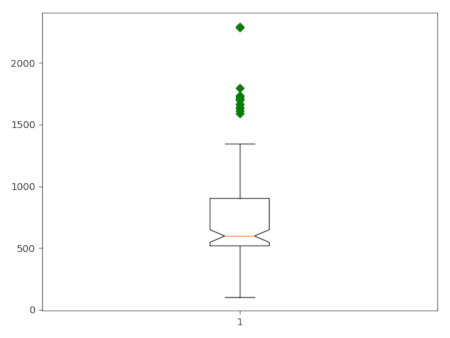
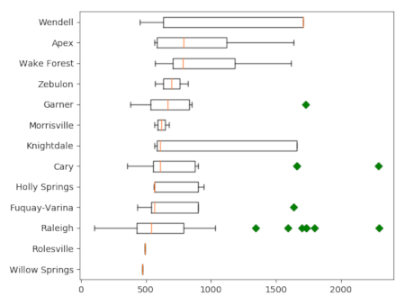

d.vect.colbp draws a boxplot of the values in a vector map attribute column. The user can use the where option to only select a subset of the attribute table. There is also the option to group the values of the column according to the categories in a second column (group_by and create one plot with for each group a separate boxplot.
By default, the resulting plot is displayed on screen (default). However, the user can also save the plot to file using the plot_output option. The format is determined by the extension given by the user. So, if plot_output = outputfile.png, the plot will be saved as a png file.
There are a few additonal layout options, including the option to rotate the plot and the x-axis labels. Furthermore, the user can optinally plot the boxplot(s) with notches and without outliers.
This script, based on d.vect.colhist, is a quick and dirty solution sing basic matplotlib, and will need some further fine-tuning and testing.
d.vect.colbp -n map=schools_wake column=CORECAPACI where="CORECAPACI >0"

Figure 1: Boxplot of core capacity of schools in Wake County.
d.vect.colbp -h --overwrite map=schools_wake column=CORECAPACI where="CORECAPACI >0" group_by=ADDRCITY order=ascending

Figure 2" Boxplot of core capacity of schools in Wake County, grouped by city.